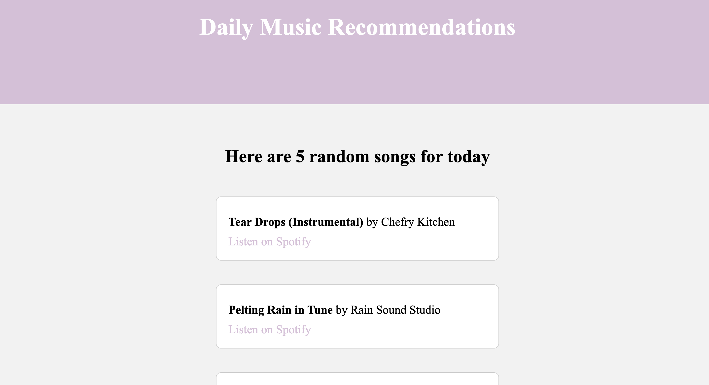

Elephant Monitoring Project, Engineers for Exploration
This is a project that I am just starting this week. This project is pretty new, and is part of the Acoustic Species Identification Lab. Lead by Sean Perry, we will be researching and analyzing the sounds of elephants in order to decrease the human fatalities with elephant interaction.
Dessert of Not? A Recipe for Classification
This was part of my DSC80 final project. Along with Tanisha Kumar, my groupmate, we analyzed holiday recipes dataset to classify foods as “dessert” or “non-dessert” based on nutritional content. Tuned a Random Forest classifier with GridSearchCV, improving macro F1 score from 0.41 to 0.60 and raising dessert recall from 0.01 to 0.52.
UCSD College Ranker

Along with my four other teammates, we created a website which had a quiz that would assist college applicants applying to UCSD into ranking their colleges.
Music Recommendation Website

Along with my four other teammates, we developed an HTML website with a chat-bot that would recommend five random songs from Spotify daily.